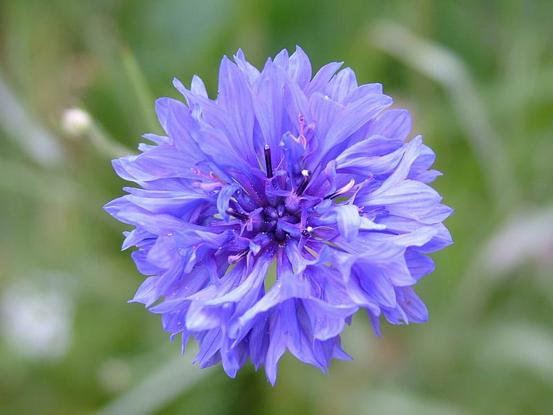
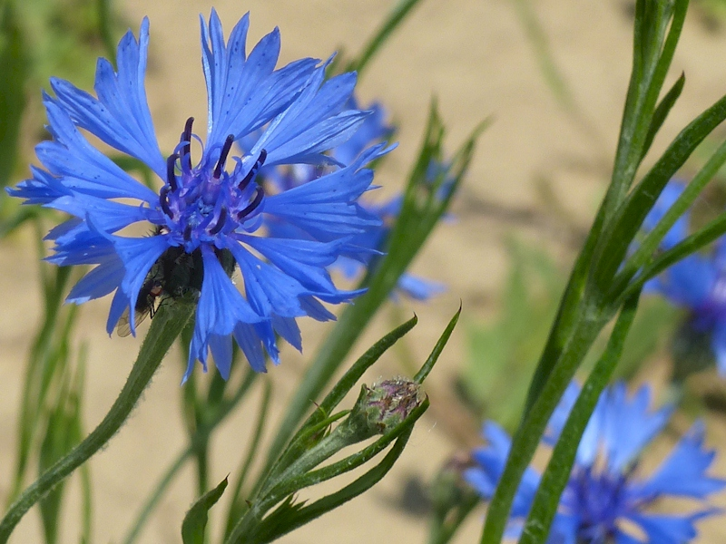
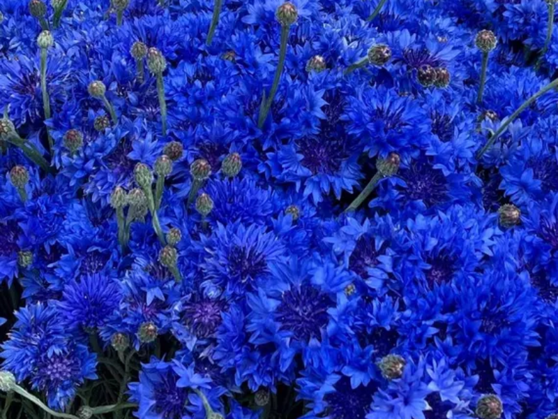
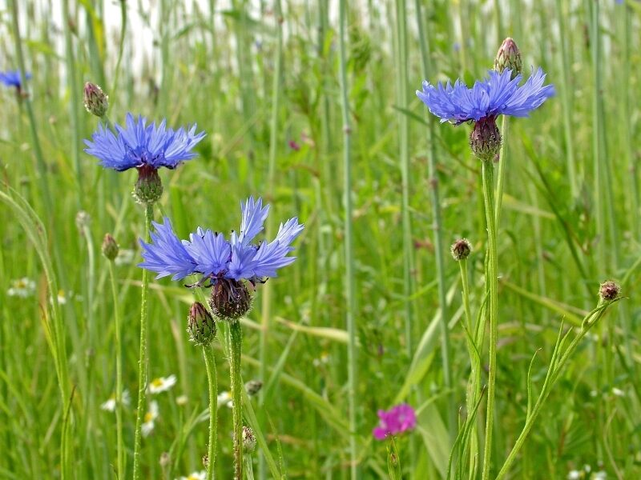

Meaning: Hope in love
Origin
Folklore surrounding the cornflower, also called a “bachelor’s button,” states that a young man is to wear the flower when he is in love. If the flower dies quickly, it means his adoration is unrequited. However, if the flower maintains its bloom, there is hope that the young man’s love will be returned.
Gallery



